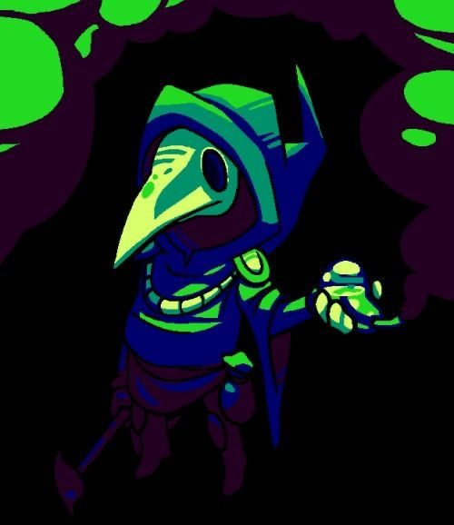

The Alchemical Gazette

YOUNG SCHOLAR SPOTTED WEAVING MACHINE RUNES AND BREWING UNAUTHORIZED PROJECTS
Dispatches from the Blind Alleys indicate a peculiar anomaly taking root within the western hills of the realm. Inquisitors from the Ministerium of Sorcery have confirmed the emergence of an independent practitioner operating entirely outside standard guild registries.
The subject is a 20-year-old scholar of the realm, natively bound to Kerala by blood, officially recorded as a son and a brother. Local tavern rumors insist he is also bound to a sentient familiar of pure mischief. Currently residing in Germany, the subject is enrolled as an initiate of Computer Science at the esteemed University of Saarland.
According to recovered folios, his days are spent reading through stacks of books, grinding video games and writing code from an Arch-BTW tower. While the Ministry has declined to issue a formal hazard classification, inquisitors note that his grimoire is expanding rapidly. Further dispatches will follow as developments unfold.